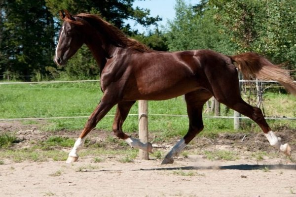
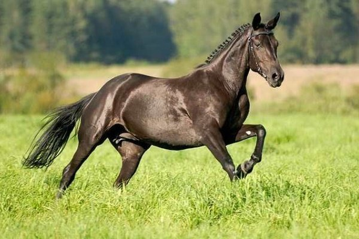

 Американська верхова кінь відрізняється привабливою зовнішністю. Це ефектне тварина, якій віддають перевагу любителі верхової їзди. Скакун володіє потужним статурою, з-за чого, сидячи на ньому верхи, людина не відчуває страху, лише впевненість. Американські коні дуже рухливі і кмітливі, добрі та хороші. У них спокійний характер. Породу вивели американські плантатори в 19 столітті. Метою створення породи було бажання отримати кінь для тривалої їзди. Американська верхова володіє комфортним і м’яким ходом. Рухається плавно, без різких рухів. Це головна цінність. У тварини суха, вузька голова з правильним абрисом. Голова розташована на тонкою, довгою, гарно вигнутої шиї. Холка висока. Сильна Спина, коротка. Вага коні варіюється в межах від 450 до 540 кілограм. Висота в холці – від 1,5 до 1,7 метрів.
Англійські коні набули популярності, за рахунок своєї швидкості. Тварини не тільки дуже бажані, але і дорогі. Порода специфічна, не підійде новачкам. Вважається однією з кращих серед тих, що призначені для верхової їзди. Коней використовують в англійській полюванні.
 Порода була виведена на початку 18 століття, коли в Англії привезли арабських жеребців для схрещування з найкращими місцевими кобилами. Вже тоді в країні скачки отримали популярність.
Кінь став ідеальною для верхової їзди.